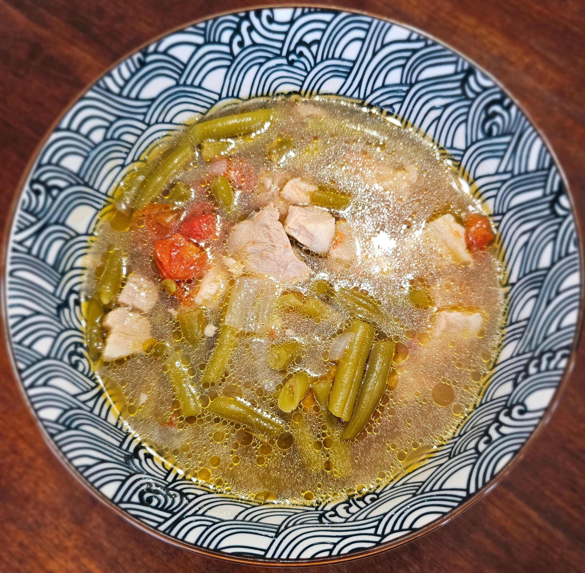

Sinigang is a traditional Filipino soup known for its comforting, savory, and distinctly sour flavor profile that is traditionally achieved through tamarind, guava, or other tangy fruits. It is almost always made with pork as the richness of the pork pairs excellently with the sourness of the broth.
It is, of course, served with white rice. Catherine's Sinigang is loved by all three of her boys and her husband.
As mentioned, Sinigang is served with a plate of white rice. The broth is poured over the rice and everything is eaten together. Catherine prefers the Knorr brand of Tamarind soup mix.